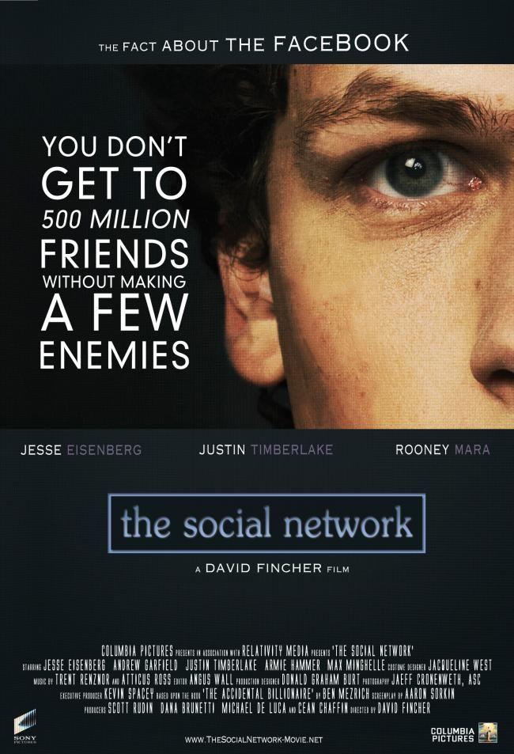
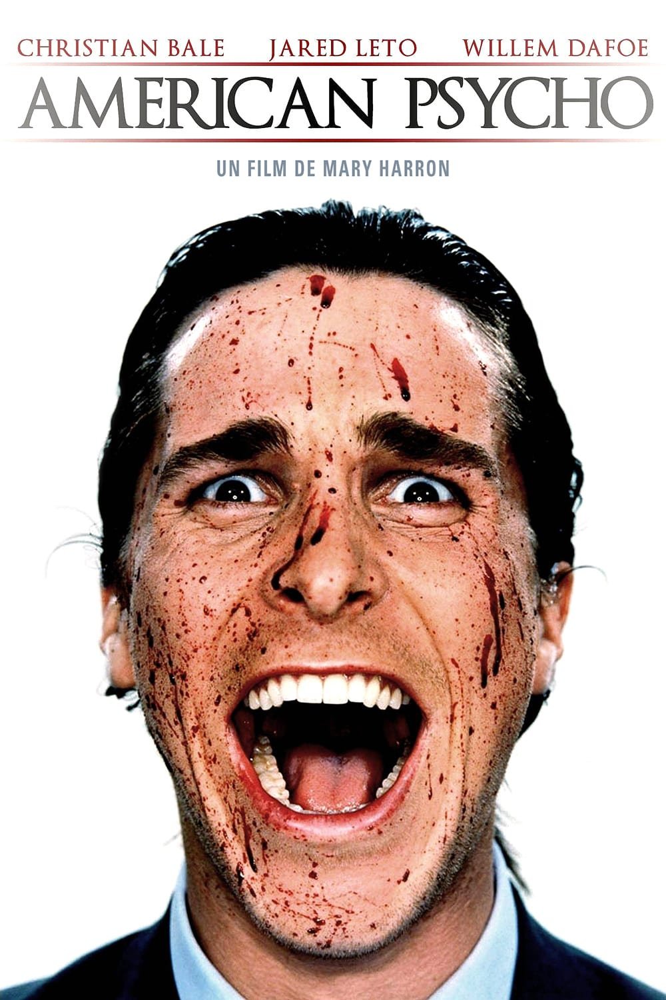
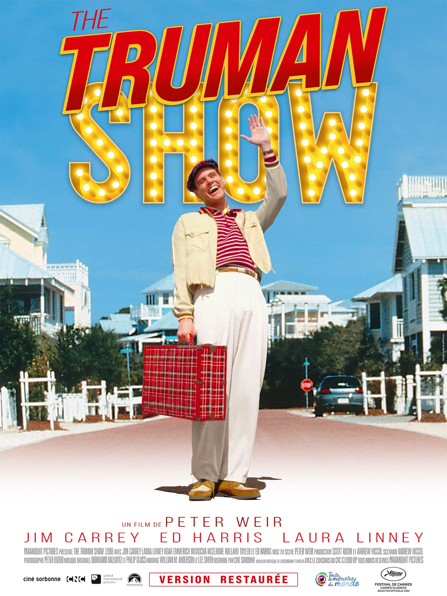
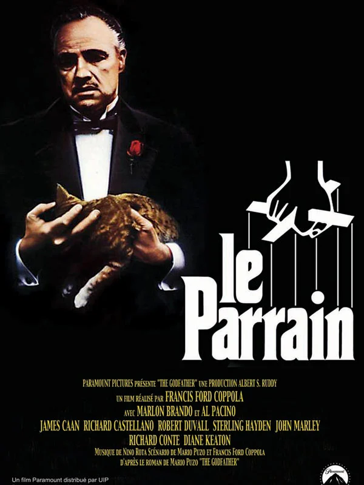
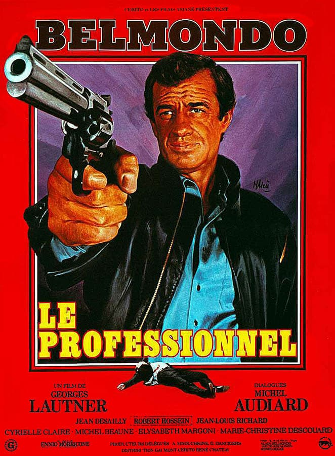

Les meilleurs films
The Social Network
Synopsis
2010
Une soirée bien arrosée d'octobre 2003, Mark Zuckerberg, un étudiant qui vient de se faire plaquer par sa petite amie, pirate le système informatique de l'université deHarvard pour créer un site, une base de données de toutes les filles du campus.
Pulp Fiction

Synopsis
1994
L'odyssée sanglante et burlesque de petits malfrats dans la jungle de Hollywood à travers trois histoires qui s'entremêlent. Dans un restaurant, un couple de jeunes braqueurs, Pumpkin et Yolanda, discutent des risques que comporte leur activité. Deux truands, Jules Winnfield et son ami Vincent Vega, qui revient d'Amsterdam, ont pour mission de récupérer une mallette au contenu mystérieux et de la rapporter à Marsellus Wallace.
Inception

Synopsis
2010
Dom Cobb est un voleur expérimenté dans l'art périlleux de l'extraction' : sa spécialité consiste à s'approprier les secrets les plus précieux d'un individu, enfouis au plus profond de son subconscient, pendant qu'il rêve et que son esprit est particulièrement vulnérable. Très recherché pour ses talents dans l'univers trouble de l'espionnage industriel, Cobb est aussi devenu un fugitif traqué dans le monde entier. Cependant, une ultime mission pourrait lui permettre de retrouver sa vie d'avant.
American Psycho
Synopsis
2000
Au coeur des années Reagan, Patrick Bateman est un pur produit de la réussite américaine. Jeune, riche, il est un de ces golden boys qui triomphent à la bourse. Seul le nec plus ultra est digne de lui et il s'emploie à ne retrouver que des symboles qui lui renvoient une image de succès. Il accumule, avec une obsession maladive, les vêtements de luxe, les relations enviables. Son voeu le plus cher est de se fondre dans cette foule, de trouver sa place au milieu de ceux auxquels il s'identifie.
Shutter Island

Synopsis
2010
En 1954, une meurtrière, extrêmement dangereuse, placée en centre de détention psychiatrique disparaît sur l'île de Shutter Island. Deux officiers du corps fédéral des marshals, Teddy Daniels et Chuck Aule, sont envoyés sur place pour enquêter. Très vite, Teddy Daniels comprend que le personnel de l'établissement cache quelque chose. Seul indice dont il dispose : un bout de papier sur lequel est griffonnée une suite de chiffres entrecoupée de lettres.
The Truman Show
Synopsis
1998
Truman Burbank mène une vie calme et heureuse. Il habite dans un petit pavillon propret de la radieuse station balnéaire de Seahaven. Il part tous les matins à son bureau d'agent d'assurances dont il ressort huit heures plus tard pour regagner son foyer, savourer le confort de son habitat modèle, la bonne humeur inaltérable et le sourire mécanique de sa femme, Meryl. Mais parfois, Truman étouffe sous tant de bonheur et la nuit l'angoisse le submerge. Il se sent de plus en plus étranger, comme si son entourage jouait un rôle. Il se sent observé...
Le Parrain
Synopsis
1972
En 1945, à New York, les Corleone sont une des 5 familles de la mafia. Don Vito Corleone, "parrain" de cette famille, marie sa fille à un bookmaker. Sollozzo, `parrain' de la famille Tattaglia, propose à Don Vito une association dans le trafic de drogue, mais celui-ci refuse. Sonny, un de ses fils, y est quant à lui favorable. Afin de traiter avec Sonny, Sollozzo tente de faire tuer Don Vito, mais celui-ci en réchappe.
Fight Club

Synopsis
1999
Pourvu d'une situation des plus enviable, un jeune homme à bout de nerfs retrouve un équilibre relatif en compagnie de Marla, rencontrée dans un groupe d'entraide. Il fait également la connaissance de Tyler Durden, personnage enthousiaste et charismatique. Ensemble, ils fondent le Fight Club, où ils organisent des combats clandestins et violents, destinés à évacuer l'énergie négative de chacun. /
Le professionnel
Synopsis
1981
Issu de l'élite de l'armée française, Joss Beaumont est chargé d'exécuter le président de la Malagawi. Un contre-ordre tombe, la cible est devenue un ami de l'Etat. Pour l'empêcher de nuire, Beaumont est incarcéré, mais ne tarde pas à s'évader, décidé à mener à bien l'opération malgré l'opposition de sa hiérarchie.